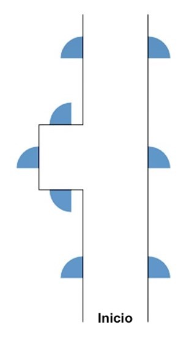

A continuación, usted verá videos de una persona caminando en unos pasillos. Mientras hace esto, la persona se detiene en las puertas y en las intersecciones de los pasillos para mirar a su alrededor. La persona puede girar en un cruce o darse la vuelta y caminar de regreso.
Su tarea consistirá en intentar seguir mentalmente la ubicación actual de la persona e indicar, al final, qué puerta ha elegido usando el mapa que se muestra al lado del vídeo. El mapa no cambia su orientación; ni siquiera si la persona se da vuelta. Tan pronto como la persona haya elegido una puerta extendiendo su brazo hacia la manilla, por favor, toque la puerta correspondiente en el mapa.
Aquí usted puede ver un ejemplo de un mapa. Los iconos azules representan puertas en partes específicas del pasillo. La posición inicial de la persona está marcada en el mapa con la palabra 'Inicio'.
Ahora usted completará una ronda de práctica. Los videos NO SE PUEDEN pausar y NO SE PUEDEN repetir, así que, por favor, preste mucha atención mientras se reproducen los videos. El mapa estará en el lado derecho de la pantalla. Después de unos segundos, el video comenzará a reproducirse automáticamente. Aproveche este tiempo para ubicar la posición inicial de la persona en el mapa.
I1
P1
P2
Ahora comenzará la tarea de verdad. Recuerde intentar seguir mentalmente la ubicación actual de la persona en el mapa. Los videos no se pueden pausar ni repetir. Si no está seguro de qué puerta ha sido elegida, señale la opción que crea más probable. Por favor, responda tan rápido como pueda. ¿Está listo(a)?